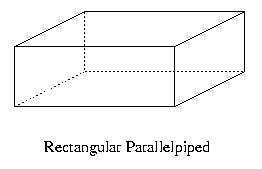
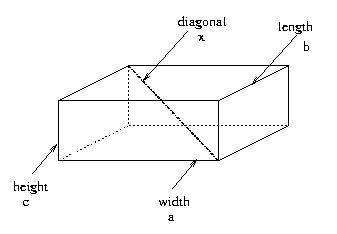
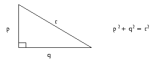
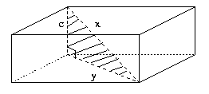
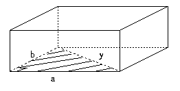
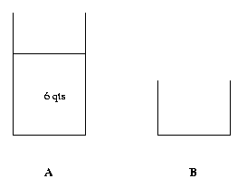
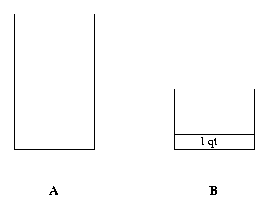
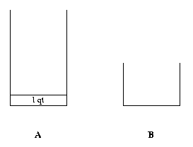
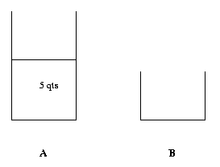
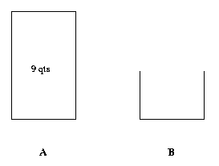

Add your own heuristics as you gain experience.
(1) Have I seen it before ?
That is, do I know similar or related problems ? Similar/related problems are ones with the same or a similar unknown or unknown may be different but the settings are the same or similar. See
(2) Do a little analysis on relationships among data, conditions and unknowns, or between hypothesis and conclusion.
(3) What facts do I know related to the problem on hand ?
These are facts on the subjects appearing in the problem. They often involve the same or similar words. An example can be found
It is very important that we know inference rules.
(4) Definitions: Make sure that you know the meaning of technical terms. This is obviously crucial to problem solving at any level. But especially at this level, if you know their meaning and understand the concepts, you can see a solution to most of the problems without much difficulty. See for example
(5) Compose a wish list of intermediate goals and try to reach them.
(6) Have you used all the conditions/hypotheses ? : When you are looking for paths to a solution or trying to verify your solution, it is often a good idea to check whether or not you have used all the data/hypotheses. If you haven't, something is often amiss. See
(7) Divide into cases: Sometimes if you divide your problem into a number of separate cases based on a property of objects appearing in the problem, it simplifies the problem and clear your mind. For example if the problem concerns integers, then you may want to divide it into two cases: one for even numbers and the other for odd numbers as, for example, you can see in
(8) Proof by contradiction: If you make an assumption, and that assumption produces a statement that does not make sense, then you must conclude that your assumption is wrong. For example, suppose that your car does not start. A number of things could be wrong. Let us assume for simplicity's sake that either the battery is dead or the starter is defective. So you first assume that the battery is dead and try to jump start it. If it doesn't start, you have a situation that does not make sense under your assumption of dead battery. That is, a good battery should start the car but it doesn't. So you conclude that your assumption is wrong. That is the battery is not the cause. Proof by contradiction follows that logic.
In this method we first assume that the assertion to be proven is not true and try to draw a contradiction i.e. something that is always false. If we produce a contradiction, then our assumption is wrong and therefore the assertion we are trying to prove is true.
When you are stuck trying to justify some assertion, proof by contradiction is always a good thing to try.
(9) Transform/Restate the problem, then try (1) - (3) above.
(10) Working backward: In this approach, we start from what is required, such as conclusion or final (desired) form of an equation etc., and assume what is sought has been found. Then we ask from what antecedent the desired result could be derived. If the antecedent is found, then we ask from what antecedent that antecedent could be obtained. ... We repeat this process until either the data/hypotheses are reached or some easy to solve problem is reached.
(11) Simplify the problem if possible. Take advantage of symmetries which often exist.
Keep in mind that your first try may not work. But don't get discouraged. If one approach doesn't work, try another. You have to keep trying different approaches, different ideas. As you gain experience, your problem solving skills improve and you tend to find the right approach sooner.
Let us now look at some examples to illustrate the topics discussed above.
Example 1
This is an example in which you can find a solution once you analyze and understand the unknowns and data.
Problem: A survey of TV viewers shows the following results:
To the question "Do you watch comedies ?", 352 answered "Yes".,
To the question "Do you watch sports ?", 277 answered "Yes", and
To the question "Do you watch both comedies and sports ?", 129 answered "Yes".
Given these data, find, among people who watch at least one of comedies and sports, percentages of people who watch at least one of comedies and sports watch only comedies, only sports, and both comedies and sports.
Let us try to solve this problem following the
Understanding the Problem: This is a "find" type problem. So we try to identify unknowns, data and conditions.
The unknowns are the percentage of people who watch only comedies, the percentage of people who watch only sports, and the percentage of people who watch both comedies and sports.
The data are the three numbers: 352, 277 and 129, representing the number of people who watch comedies, sports, and both comedies and sports, respectively. Note that 352 includes people who watch both comedies and sports as well as people who watch only comedies. Similarly for 277.
The conditions are not explicitly given in the problem statement. But one can see that the percentages must add up to 100, and they must be nonnegative.
Devising a Solution Plan: Here we first examine the principal parts in detail.
First let us consider the unknowns in more detail. To calculate the percentage of the people who watch only comedies, for example, we need the number of people who watch at least one of comedies and sports, and the number of people who watch only comedies. Thus actually two unknowns are involved in each of the required percentages, and the real unknowns are the number of people in each of the categories, and the number of people who watch at least one of comedies and sports.
Next let us look at the data. First the number 352 is the number of people who watch comedies. But that is not necessarily that of the people who watch only comedies. It includes that and the number of people who watch both comedies and sports. Similarly for the second number 277.
Let us use symbols to represent each of the unknowns: Let C represent the number of people who watch only comedies, S that of the people who watch only sports, and T that of the people who watch at least one of those programs.
Then we have the following relationships among the unknowns:
C + 129 = 352
S + 129 = 277
C + S + 129 = T
From these equations we can easily obtain C = 223, S = 148, and T = 500 .
Thus the required percentages are 44.6%, 29.6%, and 25.8%, respectively.
All we had to do to solve this problem is to analyze relationships between the data and the unknowns, that is, nothing much beyond "understanding the problem".
Example 2
This is a problem which you can solve using similar known results.
Problem: Find the (length of) diagonal of a rectangular parallelepiped given its length, width and height.
Again let us try to solve this problem following the
Understanding the Problem: This is a "find" type problem. So we try to identify unknowns, data and conditions.
The unknown is the diagonal of a rectangular parallelepiped, and the data are its length, width and height. Again there are no explicitly stated conditions. But the unknown and data must all be a positive number.
Before proceeding to the next phase, let us make sure that we understand the terminologies.
First a rectangular parallelepiped is a box with rectangular faces like a cube except that the faces are not necessarily a square but a rectangle as shown below.

Next a diagonal of a rectangular parallelepiped is the line that connects its two vertices (corner points) that are not on the same plane. It is shown in the figure below.

Devising a Solution Plan: Here we first try to find relevant facts. Relevant facts often involve the same or similar words or concepts. Since the unknown is a diagonal, we look for facts concerning diagonal. Note that drawing figures here is quite helpful.
One of the facts that immediately comes to our mind in this problem is Pythagoras' theorem. It has to do with right triangles and is shown below.

Let us try to see whether or not this theorem helps. To use this theorem, we need a right triangle involving a diagonal of a parallelepiped. As we can see below, there is a right triangle with a diagonal x as its hypotenuse.

However, the triangle here involves two unknowns: x and y. Since x is what we are looking for, we need to find the value of y. To find y, we note another right triangle shown below.

Applying Pythagoras' theorem again, we can obtain the value of y.
Thus y2 = a2 + b2
is obtained from the second triangle, and
x2 = c2 + y2
is derived from the first triangle.
From these two equations, we can find that x is equal to the positive square root of a2 + b2 + c2 .
Example 3
This is a proof type problem and
Problem: Given that a, b, and c are odd integers, prove that equation ax2 + bx + c = 0 can not have a rational root.
Understanding the Problem: This is a "prove" type problem.
The hypothesis is that a, b, and c are odd integers, and the conclusion is that equation ax2 + bx + c = 0 can not have a rational root.
The hypothesis is straightforward. In the conclusion, "rational root" means a root, that is, the value of x that satisfies the equation, and that can be expressed as m/n, where m and n are integers. So the conclusion means that there is no number of the form m/n that satisfies the equation under the hypothesis.
Devising a Solution Plan: For this problem, let us try "proof by contradiction". When you are asked to prove the impossibility of an event or non-existence of certain things, this approach often is quite helpful.
Following the "proof by contradiction", let us assume that the conclusion is false, that is the equation ax2 + bx + c = 0 has a rational root m/n, where m and n are integers, when a, b, and c are odd integers. We can assume without loss of generality that m and n do not have any factors in common. Then
a(m/n)2 + b(m/n) + c = 0 . ------------------------ (1)
Let us try to derive a contradiction from this.
First let us make this equation simpler, that is, let us get rid of fractions.
Since n is not equal to 0, multiplying the both sides of (1) by n2, we get
am2 + bmn + cn2 = 0 . ------------------------ (2)
Since m is an integer, it is either even or odd. We are going to consider those cases one by one. That is
Let us first consider the case when m is even.
Then n is odd, since otherwise m and n have a common factor 2. Now am2 + bmn is even, and cn2 is odd. Hence am2 + bmn + cn2 can not be 0.
Next let us consider the case when m is odd.
By an argument similar to the previous case, we can see that n is also odd.
If m and n are odd, then am2, bmn, and cn2 are all odd, since a, b, and c are odd integers. However, the sum of three odd numbers can not be equal to 0.
Thus by assuming that the conclusion is false, we have arrived at a contradiction, that is m/n does not satisfy the equation. Hence our assumption must be wrong, and therefore the conclusion is correct.
Example 4
This is another proof type problem and
Problem: Prove that ( a + b + c )2
Understanding the Problem: This is a "prove" type problem.
The hypothesis is that a, b, and c are three sides of a triangle, and the conclusion is that inequality ( a + b + c )2
Devising a Solution Plan: Here we try "Working Backward" heuristic. That is manipulate the conclusion possibly using the hypothesis and reduce it into something that is obviously true.
First by multiplying out the left hand side of the inequality, ( a + b + c )2 = a2 + b2 + c2 + 2( ab + bc + ca ) .
Hence if a2 + b2 + c2
Next, to see what we can try, note that we have not used the hypothesis yet, and see if it can help here.
It is well known that the sum of two sides of a triangle is greater than the third side.
Hence a + b > c , b + c > a , and c + a > b hold.
From these we can obtain c(a + b) > c2 , a(b + c) > a2 , and b(c + a) > b2 .
By adding these three inequalities, we get
a2 + b2 + c2 < a(b + c) + b(c + a) + c(a + b) = 2( ab + bc + ca ) .
Hence a2 + b2 + c2 < 2( ab + bc + ca ) .
Hence a2 + b2 + c2
Hence ( a + b + c )2
Example 5
This is a find type problem and
Problem: Given a 4 quart pail and a 9 quart pail, obtain 6 quarts of water in the 9 quart pail using these two pails. You can fill or empty the pails and you can have as much water as you want.
Understanding the Problem: This is a "find" type problem.
The problem is to obtain 6 quarts of water in the 9 quart pail using 4 quart and 9 quart pails as measures. You can fill either pail from the water source or from the other pail, and you can empty the pails any time.
Devising a Solution Plan: You can solve this in a number of different ways. Here we try "Working Backward" heuristic. It starts with the desired solution and work backward step by step. At each step we try to find a state that immediately precedes the current state such that we can reach the current state from that state with one simple operation such as filling a pail or emptying a pail in this problem. We repeat this process until we reach some easily reachable state such as empty pails, full pails, one pail full and the other empty, etc.
Our solution to the original problem is obtained by traversing this process backward to the desired state.
Let us denote the 9 quart pail by A and the 4 quart pail by B for simplicity.
In this problem, the desired state is to have 6 qts in A.

Thus in the first step of "working backward", we ask how we could get to the desired state with one operation.
As one can easily see if we could dump 3 qts from 9 qts in A, then we would have 6 qts in A. To be able to dump 3 qts from A we need 1 qt in B. Thus the state immediately preceding the current state is the one where A is full and B has 1 qt in it.

In the second step, the question we ask is how to get 1 qt in B.
It does not look easy to get 1 qt in B. So let us see whether or not we can get 1 qt in A. If we have 1 qt in A, then we can certainly get 1 qt in B without any trouble. thus we might say that the third state is to have 1 qt in A.

In the third step, the question we ask is how to get 1 qt in A.
This is relatively easy to accomplish because all you have to do is to get rid of 8 qts from a full A, which can be done by emptying A twice into B.


Since this state can be easily reached (all you have to do to get to this state is to fill A with water), we stop here. Our solution to the original problem is now obtained by going this process backward.
Thus first we fill up A. Then dump A into B leaving 5 qts in A. Then dump A into B again. This gives us 1 qt in A. Pour that into B. Then fill A and empty it into B. We now have 6 qts in A, which is what is required.